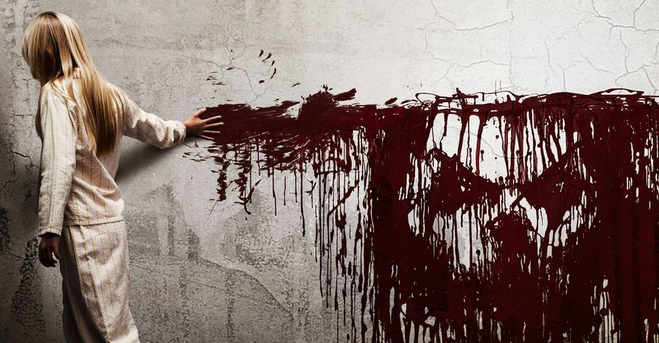
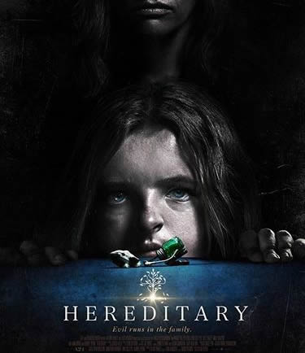
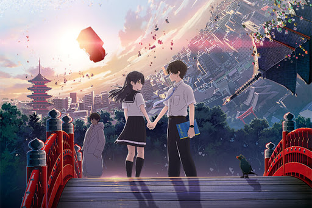
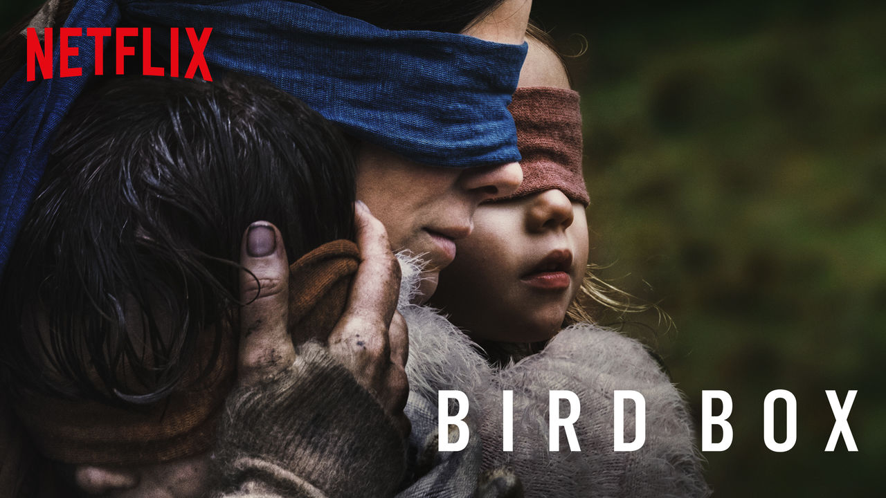
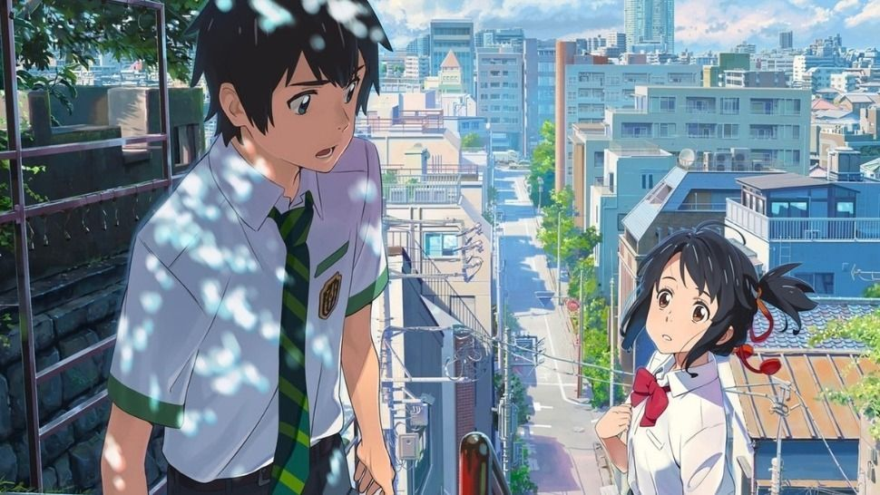

.png)
.png)
.png)
Movie
|  | Judul : Sinister Ellison, seorang kriminal novelis mengalami kesulitan menemukan ide untuk buku terbarunya, akhirnya memutuskan untuk membawa keluarganya ke sebuah rumah dimana sebuah keluarga terbunuh di rumah tersebut. Ia menemukan kotak berisi video keluarga lain yang dibunuh secara brutal Ellison mencoba untuk mencari tahu apa yang terjadi dengan menonton video-video tersebut dan ketika ia mengetahui adanya keterlibatan kekuatan lain, ia menyadari bahwa keluarganya dalam bahaya, apakah yang terjadi selanjutnya??....... |
|  | Judul : Hereditary Ketika ibu dari keluarga Graham meninggal, keluarga anak perempuannya mulai dihantui oleh rahasia yang misterius dan menakutkan tentang nenek moyang mereka. Semakin mereka berusaha mencari tahu, semakin mereka terancam oleh takdir yang mengerikan ini. Apakah mereka dapat melepaskan diri dari takdir buruk tersebut??..... |
|  | Judul : Hello World Hello World mengisahkan tentang seorang laki-laki bernama Naomi Katagaki yang hidup di sebuah kota di tahun 2027, dimana peradaban sudah sangat maju. Ia adalah laki-laki yang sangat menyukai buku namun cenderung tertutup dan susah bergaul. Naomi menyukai seorang wanita bernama Ruri yang cantik dan imut tapi susah diajak bersosialisasi. Suatu hari Naomi bertemu dengan seorang pria dewasa yang mendatanginya. Anehnya, pria itu mengaku sebagai Naomi dewasa yang datang dari masa depan di tahun 2037. Apakah yang diinginkan dirinya yang berasal dari masa depan??...... |
|  | Judul : Bird Box Lima tahun sebelumnya, Malorie tengah berkendara bersama saudara perempuannya, Jessica. Di perjalanan pulang usai memeriksakan kandungan Malorie, mereka berdua melihat kekacauan di sepanjang jalan. Belum sampai memahami apa yang sebetulnya terjadi, Jessica tiba-tiba terlihat ketakutan seolah sedang melihat mahkluk mengerikan. Jessica menabrakkan mobilnya hingga mereka terpelanting di jalan. Jessica tewas seketika, tapi Malorie selamat. Malorie kemudian diajak Tom memasuki sebuah rumah yang lebih aman. Di sana juga terdapat beberapa orang yang tengah menyelamatkan diri dari kekacauan di luar. Rupanya, dunia kini tengah diserang sebuah teror mahluk tak kasatmata. Apakah Malorie dapat selamat??....... |
 |
Judul : Kimi no Nawa Bercerita tentang laki-laki dan perempuan remaja yang hidup terpisah dan belum pernah bertemu sama sekali. nama gadis tersebut ialah Mitsuha Miyamuzu, sedangkan anak laki-laki tersebut ialah Taki Tachibana. Mitsuha yang tinggal di kota Itomori di daerah pegunungan Hida merasa bosan dengan kehidupan desa dan berharap menjadi anak laki-laki tampan di kehidupan berikutnya. Cerita ini dimulai ketika Mitsuha yang ingin sekali tinggal di Tokyo sampai-sampai setiap hari ia memikirkan dirinya yang tinggal di Tokyo. Suatu hari tiba-tiba datang kejadian yang luar biasa. Saat ia terbangun dari mimpi, ia merasa ada yang aneh di kamarnya. Ketika ia menyadari, ia sangat terkejut karena ternyata tubuhnya berubah menjadi laki-laki., bagaimakah kelanjutannya??......
|